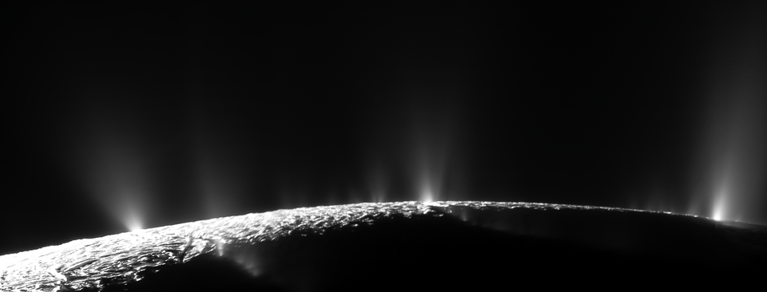
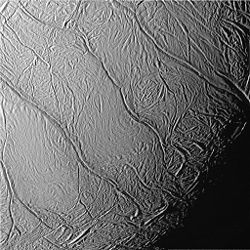
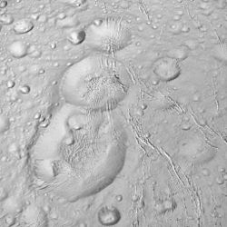

Enceladus as seen in enhanced color by the Cassini orbiter
Enceladus is the sixth biggest moon of Saturn.
It was discovered by William Herschel in 1789 and is named after a giant from Greek mythology.
It is composed mostly of water ice.
Apart from craters, ridges and fractures, it has numerous geysers that shoot water vapors into space, part of which falls back as snow.
It is suspected that a liquid water ocean is underneath the ice crust, similar to many icy moons, and similar to Europa, it has active geological processes that are suitable for the creation of complex organic compounds and possibly life.
Many mission were proposed to search for life on Enceladus, but so far none have been approved.
Enceladus was discovered by William Herschel in 1789 with his 40-foot telescope, the biggest at the time.
The name Enceladus comes from the giant in Greek mythology who fough Athena in the Gigantomachy.
John Herschel, son of William Herschel, was the first to suggest naming satellites of Saturn after Titans and Giants, since Cronus (Greek analogue of the Roman Saturn) is their leader.
Orbit and rotation
Enceladus is one of the major inner satellites of Saturn along with Dione, Tethys, and Mimas.
It orbits at 238,000 km from Saturn's center, between the orbits of Mimas and Tethys.
Among all of the confirmed satellites, it is the 14th most distant, behind Pallene.
It orbits Saturn every 32.9 hours.
Enceladus is currently in a 2:1 orbital resonance with Dione.
This resonance is the cause behind Enceladus's orbital eccentricity to be 0.0047.
Enceladus orbits within the densest part of Saturn's E ring, the outermost of its major rings, and its geysers are the main source of the ring's composition.
Like every round moon known to orbit another planet, Enceladus is tidally locked.
Enceladus is a relatively small but round satellite.
Its mean diameter is 504.2 km, slightly deformed by Saturn into a scalene sllipsoid, and is the sixth Saturnian moon in size and mass.
Enceladus’s internal structure is believed to consist of a rocky core surrounded by a layer of water in various states.
Data from NASA’s Cassini spacecraft revealed that Enceladus has a differentiated interior.
The core is composed of silicate minerals, similar to Earth’s mantle, and is possible that parts of it have melted.
Gravity measurements by the Cassini probe indicate possible ice water contents inside the core.
The core’s radioactive decay and tidal forces exerted by Saturn’s gravity generate heat, which is sufficient to melt part of the water ice crust and form a global ocean.
The subsurface ocean lies beneath an ice shell that is 30 to 40 kilometers thick.

Plumes from Enceladus. Source
Evidence for the existence of a subsurface ocean comes from observations of water vapor and ice particles erupting from the moon’s south polar region, a phenomenon known as cryovolcanism.
Originally, it was thought that the ocean is limited to the polar regions with a depth of only 10 kilometers.
Further analysis showed librations that suggested that the ocean is golbal and that it is likely between 26 to 31 kilometers deep.
These eruptions, which form plumes, were first observed by Cassini in 2005.
The plumes contain mostly water vapor, as well as nitrogen, carbon dioxide, methane, propane and other hydrocarbons.
There are also salts like sodium chloride and trace amounts of other, more complex organic compounds, suggesting that the subsurface ocean is in contact with the rocky core.
This interaction could provide the chemical energy necessary to support life, making Enceladus a prime target in the search for extraterrestrial habitability.
Hydrogen, ammonia, and hydrogen cyanide were also detected.

"Tiger stripes" at the south pole of Enceladus. From left to right - Damascus, Baghdad, Cairo, and Alexandria Sulci.
The external structure of Enceladus is dominated by a bright, icy surface that reflects almost all sunlight, making it one of the most reflective bodies in the solar system.
The surface is relatively young, with few impact craters, indicating that geological processes such as cryovolcanism and tectonic activity have resurfaced the moon in recent geological time.
The surface is marked by a variety of geological features, including smooth plains, craters, ridges, and fractures.
The most prominent features are the “tiger stripes” - four large, parallel fractures near the south pole, named Alexandria, Cairo, Baghdad, and Damascus Sulci.
These fractures have higher temperatures than other parts of the surface and are a major source of the moon’s cryovolcanic plumes.
Such rifts suggest that tectonic activity is the major factor that shapes the surface of Enceladus.
Cryovolcanic activity is responsible for the formation of snow on Enceladus, which covers the rock-hard ice surface and feeds the E ring of Saturn.
This snow also ends up on some of the other moons, particularly Tethys.

From top to bottom - Al Haddar, Shahrazad, and Dunyazad craters. The latter has a domed floor.
Older regions covered by more impact craters are concentrated in the northern hemisphere.
More significant craters include Dunyazad, Aladdin, and Ali Baba.
Therse three are among a series of craters, which have domed floors due to viscous relaxation, a process that deforms the craters.
A third type of regions are smooth plains, that are both younger and are bounded by ridges.
Two such regions are Sarandib and Diyar Planitia.
Voyager images were unable to resolve any craters there, since the very few present are too small.
The Voyager missions in the 80s provided the first close-up images of Enceladus.
Despite lower resolution, the images showed the presence of younger terrain.
However, it was the Cassini mission that revolutionized our understanding of the satellite.
Initial data that revealed the geologic activity of Enceladus lead to the adjustment of the orbiter for closer flybys.
Cassini’s multiple flybys revealed the cryovolcanic activity and the presence of a subsurface ocean, the composition of the plumes, and the heat emited from the interior.
Future missions are being considered to further explore Enceladus, including proposals for orbiters, landers, and even missions to fly through the plumes and analyze their contents for signs of life.
So far no misson has been approved.
However, NASA has sent a mission to Jupiter's moon Europa, which is similar to Enceladus in both having a young, icy surface, and possible saltwater ocean on top of a rocky core.
These reasons suggest that both moons are some of the most likely candidates for life outside Earth.
External links
{% include catnatural-satellites.html %}
.png){kind=link}